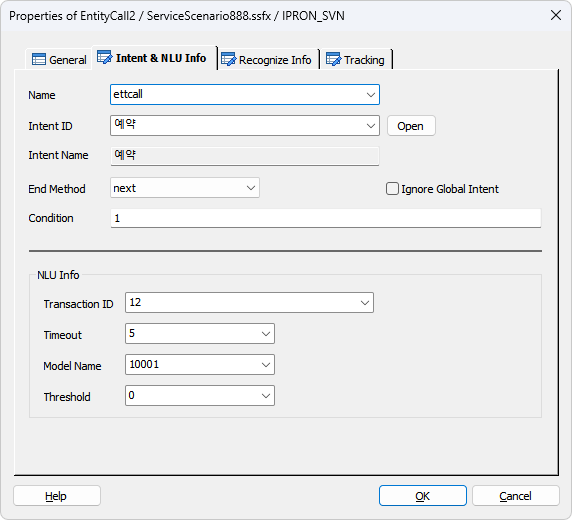
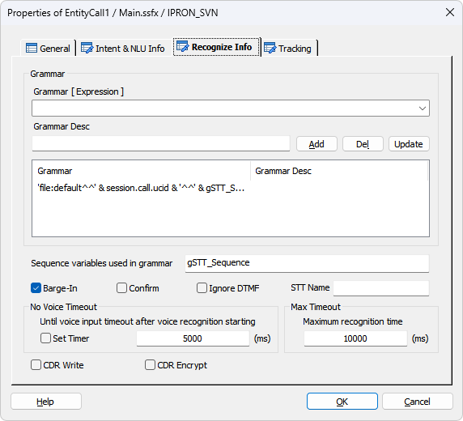
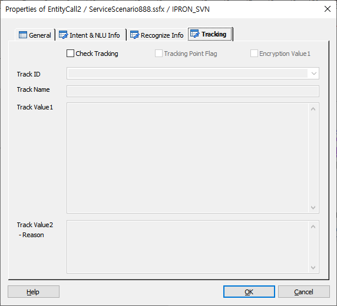

IntentCall에 의해 호출된 시나리오에서 사용 되며 DefineIntent에 설정된 Intent ID를 지정하여 Entity 리스트에 있는 Entity 값을 채우기 위한 Flow 태그(SXML)를 생성한다.
Entity 값은 먼저 호출 된 NLURequest 에서 값이 채워 질 수도 있으며 값이 채워진 Entity는 입력 처리를 Skip 한다.
Entity 리스트에 있는 모든 Entity 값이 채워져야 EntityCall 아이템이 완료 되어 다음 아이템으로 이동한다.
ICON

PROPERTIES
 Intent & NLU Info
Intent & NLU Info

Name : 아이템 이름을 입력합니다.
Intent ID : DefineIntent 아이템의 Action SubCall 속성에 지정된 시나리오에서 EntityCall 아이템을 사용 하면 해당되는 Intent ID 가 자동 지정 됩니다.
※ 해당 Intent 에 대한 Entity 를 입력 받기 위한 Flow 를 생성하기 위함으로 다른 Intent 를 지정하는 것은 의미가 없습니다.
Open Button : 지정된 DefineIntent 로 이동 한다.
Intent Name : Intent ID 에 해당하는 Intent Name 입니다.
End Method : EntityCall 처리(STT 또는 NLU 처리)가 중단 되었을 때 다음 Flow 로 넘어갈지 종료 할지를 설정 합니다.
Ignore Global Intent : 체크 되면 Global Intent 가 지정되어 있어도 체크 및 분기 하지 않습니다.
체크 안되면 NLU 분석 결과가 Intent인 경우 Global Intent로 설정된 Intent Name 을 비교하여 해당 메뉴 또는 시나리오로를 호출 하고 이 후 리턴 된 후 EntityCall 아이템은 종료됩니다.
Condition : EntityCall 아이템 수행여부 조건을 설정합니다.
NLU Info
Transaction ID : TB 에서 전문을 전송할 대상(NLU-Adapter)을 찾기 위한 서버 키 입니다.(ForCus v5.0.1 이상 부터는 필수 입력)
Timeout : NLU 처리 타임아웃을 설정 합니다.
Model Name : NLU Model Name 을 설정합니다.
Threshold : 정밀도(신뢰도) 임계값으로 NLU 결과가 Intent 인 경우 첫 번째 결과의 Confidence 와 비교하여 Threshold 미만이면 실패 처리합니다.
 Recognize Info
Recognize Info

- STT 를 입력받기 위한 속성 정보입니다.
Grammar
· 음성인식(STT)을 하기 위한 그래머를 지정 합니다.
Grammar [ Expression ] : 음성인식(STT) 그래머를 지정 합니다.
♣ STT 그래머 입력 방법
file - Nuance Engine 이 설치된 장비내에 위치하는 Grammar
mcmfile - MCM이 설치된 장비에 위치하는 Grammar(비권장)
각 항목을 "^^"으로 구분
default, UCID, Sequence(STT를 호출 할때(<voicerecognizestart 태그) 마다 증가, 0 Base 이고 현재 최대 99, 99를 넘으면 0으로 초기화 해야 함.)
사용 예 : 'file:default^^' & session.call.ucid & '^^' & gSTT_Sequence & '^^2^^ENGINEO^^.grxml'
Grammar Desc : 지정한 그래머의 설명을 입력 합니다.
Add Button : 지정한 그래머를 그래머 리스트에 추가 합니다.(문자형으로 지정시 여러 개, 변수형으로 지정시 한개 만 지정 가능)
Del Button : 선택한 그래머를 삭제 합니다.
Update Button : 선택한 그래머의 내용을 갱신 합니다.
Sequence variables used in grammar : STT 그래머 파일은 파일 이름 자체에도 STT 처리 정보를 가지고 있는데 그 중에 서도 "voicerecognizestart" 태그를 생성할 때 마다 Sequence를 증가 시켜야 하는데 그래머 파일 이름에 전역변수를 조합하여 그래머 파일을 만든다. Sequence를 증가하는 전역 변수는 NLURequest 아이템이 호출 되기 전에 증가 시켜야 하는데 Assign 아이템을 사용하여 증가 시켜야 하지만 여기에 선언한 전역 변수를 설정하면 NLURequest 아이템이 호출 될 때 마다 자동으로 증가 및 최대 값인 99가 넘을 경우 0으로 자동 초기화 까지 시켜준다.(ex. 위의 STT 그래머 입력 방법에서 전역 변수 "gSTT_Sequence")
Barge-In Check Box : 음성인식(STT) 시 Barge-In 을 처리할 것인지 유무를 지정 합니다.
Barge-In 체크 시 Ment List에 멘트가 있을 경우 <Play 태그 보다 앞에 <voicerecognizestart 태그를 생성하여 VR엔진을 시작한 후에 멘트를 Play하여 Play중 발성에 대해서 인식할 수 있게 한다.
Confirm Check Box : 음성인식 결과에 대한 사용자 질의를 음성인식으로 할때 체크 합니다. 예를 들면 "브리지텍" 이라는 음성인식 결과에 대해 "브리지텍이 맞습니까? 예 아니오로 대답해 주세요" 라고 음성인식을 할때 사용하며, 이 음성인식의 결과인 "예, 아니오" 에 따라서 "브리지텍"이라고 음성인식을 한 결과의 VR_REJECT 라는 항목의 갱신 자료로 사용 됩니다.(데이터의 갱신은 VERIFY Item을 사용 합니다.)
* STT 에서는 사용 않함.
Ignore DTMF Check Box : 음성인식 시에 디지트 입력을 무시하여 디지트에 의해 음성인식이 중단되는 것을 막습니다.(v6.0 이상)
STT Name : 등록된 STT Name 입력으로 Multi STT 를 지원합니다.(SWAT>IVR관리>미디어관리>STT 관리)(v6.0 이상)
No Voice Timeout
Set Timer Check Box : Set Timer 체크가 되면 음성인식 서버가 시작(voicerecognizestart 태그) 된 후 바로 타이머가 동작하며 체크되지 않으면 음성인식 처리 태그인 voicerecognizeresult 태그 에서 타이머 체크가 시작됩니다.
· Timeout(ms)은 음성이 입력 되기 까지의 타입아웃을 지정 합니다.
- 타임아웃 시간을 지정 하지 않으면 서버 기본 타임아웃이 적용 됩니다.(milisecond 단위)
Max Timeout
· 음성인식(STT) 서버가 음성인식(STT)을 시작 한 후 인식의 결과가 나오기 까지의 최대 시간을 지정 합니다.(milisecond 단위이며, 기본 값은 10초 입니다)
CDR(Write) Check Box : 음성인식(STT) 결과에 대한 CDR을 생성합니다.
CDR Encrypt Check Box : 음성인식(STT) 결과에 대한 CDR 생성 시 데이터를 암호화 합니다.
 Tracking
Tracking

EntityCall 에 대한 사용자 트래킹을 처리합니다.(단, EntityCall 은 EntityCall 태그가 있는 것이 아니라 DefineIntent 의 Entity List 에 지정된 Entity 를 입력 받기 위한 시나리오 태그를 생성 하기 때문에 EntityCall 아이템이 호출 되었다를 표시 하는 유저 트래킹 입니다.)
Check Tracking Check Box : Tracking을 사용 할 것인지를 체크합니다.
Tracking Point Flag Check Box : 특별한 Tracking Flag를 설정하여 SWAT에서 트래킹 시에 이 플래그가 설정된 항목만 트래킹 할 수 있습니다.
Encryption Value1 Check Box : Track Value1 속성 데이터에 대해서 암호화 처리를 합니다.
Track ID : 정의한 Track ID를 선택하거나 입력 합니다.
- DefineTrack Item에 정의된 Track ID가 콤보박스 리스트로 제공됩니다.(Type이 없거나, EntityCall인 경우)
Track Name : Track ID를 선택하면 같이 정의된 이름을 출력합니다.(SWAT에서 이 이름으로 트랙킹 시에 사용합니다.)
Track Value1 : 트래킹 시에 사용할 값을 입력 합니다.(값이 없으면 요청하는 Page 이름이 기본 값이 됩니다.)
Track Value2 :트래킹 시에 사용할 값을 입력 합니다.(결과에 대한 Reason값)
NOTICE
• Intent 에 해당하는 Entity를 받기위한 시나리오를 EntityCall 아이템 빌드시에 Entity 별로 자동 생성합니다.
빌드 Object 파일 구성 : "_" + INTENT + "_" + EntityCall Item GUID + "_" + ENTITY + ".fxml"
ex) _예약_F94ABA6A_BA77_4615_9144_F3C641DD43F1_출발지.fxml
RESULT
· 처리 결과 세션 변수
session.command.result : 처리 성공(_SLEE_SUCCESS_), 실패(_SLEE_FAILED_)
session.command.reason : 실패면 실패 오류코드(시스템 상수 참조)
· 아이템 속성 변수(@name 은 Name 항목에서 지정한 이름)
@name.filled : Intent 에 해당하는 Entity Value 가 모두 채워진 경우 TRUE
RELATED